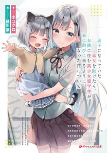
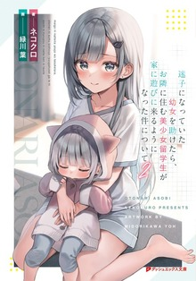
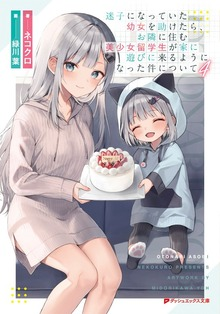

Difficulty:
beginner
Note:
82/100
Title: 迷子になっていた幼女を助けたら、お隣に住む美少女留学生が家に遊びに来るようになった件について
Roumaji: (Maigo ni natte ita youjo wo tasuketara, otonari ni sumu bishoujo ryuugakusei ga ie ni asobi ni kuruyou ni natta ken ni tsuite)
Translation: The Story Of How A Beautiful Foreign Student Who Lives Next Door Started To Visit My House After I Helped A Lost Little Girl
Synopsis:
One day, a foreign exchange student was transfered in Aoyagi Akito's class.
Her name is Charlotte Bennett. Everyone is immediately attracted by a pure and
innocent personnality, her refined demeanor and her cuteness. But, with calm,
Akito just think 'we live in different worlds' and stay away. However, when he
helps his little sister Emma who was lost, Akito's life took a dramatic turns.
Akito finds out that the Bennet sisters live in the appartment next door, and
because Emma took a liking to him, they suddenly started coming over in his
appartment almost every day. The three of them play, eat dinner and go out
together. As they spend time together, Akito and Charlotte naturally grow close,
albeit akwardly. - the start of a sweet and frustrating love comedy next door!
Genres: Romance, slice of life, iyashikei
Short review:
This is peak healing romance with heavy sibling-flavored domestic bliss. If you like
series where the biggest conflict is "should we hold hands today?" or "Emma wants
ice cream again," this delivers in spades. It's not trying to reinvent the
wheel — it's just very good at spinning that wheel smoothly and adorably.
Charlotte and Emma are an unbeatable duo. Charlotte is the elegant, slightly clumsy British exchange student
beauty who's surprisingly down-to-earth once she warms up, while little Emma is an absolute cinnamon roll of
a imouto character—energetic, affectionate, and the perfect catalyst for forcing the MC and older sister into
proximity. Their interactions feel genuinely warm and family-like without being forced.
low-burn but consistent progress. The protagonist (Aoyagi Akihito) starts off as a somewhat self-sacrificing
loner type, but the daily visits erode his walls naturally. By mid-series volumes, there's real emotional depth—past
family issues for both sides get explored lightly but meaningfully, adding just enough substance so it doesn't feel
completely brain-off fluff.
Zero toxicity. No dramatic love triangles, no annoying rivals that overstay their welcome, no contrived
drama. It's refreshingly wholesome for a harem-adjacent setup (though it's mostly focused on the two
sisters + MC).
Rating vibe: 8/10 for fans of the genre; solid comfort read if you're into imou/ane, imou/onii combo and romance
stories.
More details on reading in japanese:
It's a very easy read. The combination of slice-of-life and a little girl makes it even easier.
Slice-of-life is already one of the easiest genres to read, and adding a child makes it even more
approachable. The most difficult part is probably the discussion between the main character and his
best friend. Otherwise, if you're not yet familiar with Japanese, it can sometimes be a bit hard to
understand Emma at first — she obviously talks like a young child and mispronounces words in a cute way.
Detailed section on how to learn and read in japanese